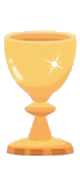

Conto alla rovescia
Per il nostro giorno speciale
27giorni
10ore
29minuti
45secondi

Dettagli del giorno
Tutto quello che devi sapere
Vi aspettiamo!
Con amore
Mamma & Papà di Ginevra
Tocca per aprire
Per il nostro giorno speciale

Tutto quello che devi sapere
Con amore